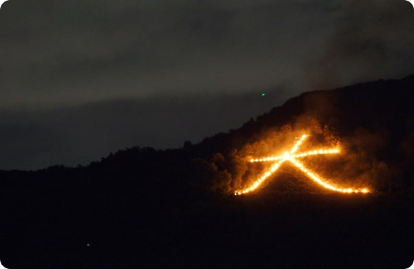
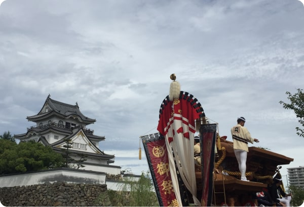

교토의 ‘고잔노오쿠리비(五ござ山んの送おくり火び )와 오사카의 ‘단지리
(だんじり)’에 대해 검색하여 조사하고 온라인 학습방에
공유해 봅시다.
예시 답안
고잔노
오쿠리비
(五ござ山んの
送おくり火び)
8월 중순 저녁에 교토의 각 산에 설치된
점화대에 불을 놓는 방식으로 진행되는
행사이다.
‘오쿠리비’는 조상의 영혼을 사후 세상으로
보내기 위한 불이라고 전해진다.
유래에 관해서는 여러 견해가 있다.

단지리
(だんじり)
9～10월에 오사카 기시와다시를 중심
으로 열린다.
‘단지리’는 수작업으로 화려하게 꾸민
축제용 수레이다.
많은 사람들이 올라탄 단지리를 끌고 마을
을 행진하는 역동적인 모습을 볼 수 있다.
